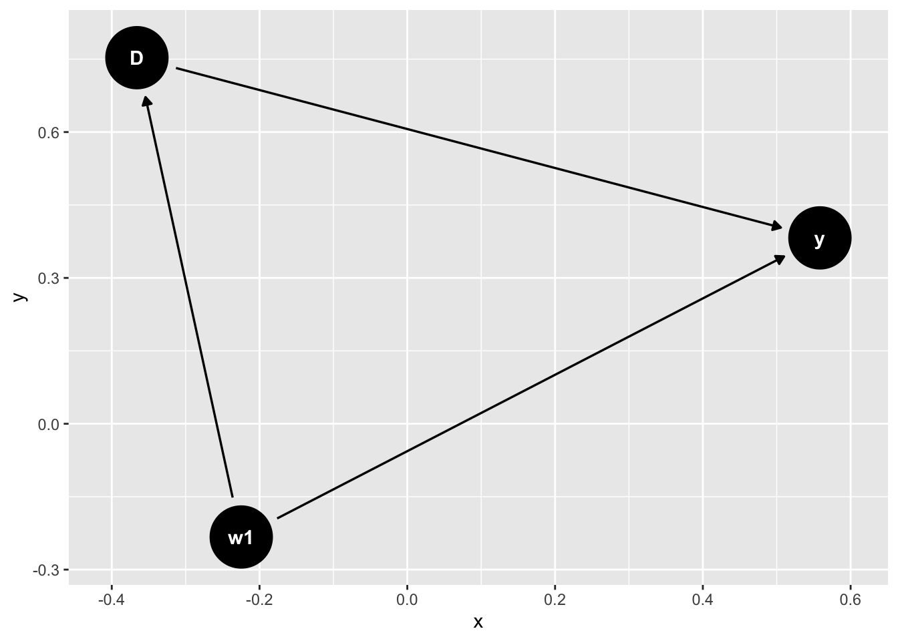
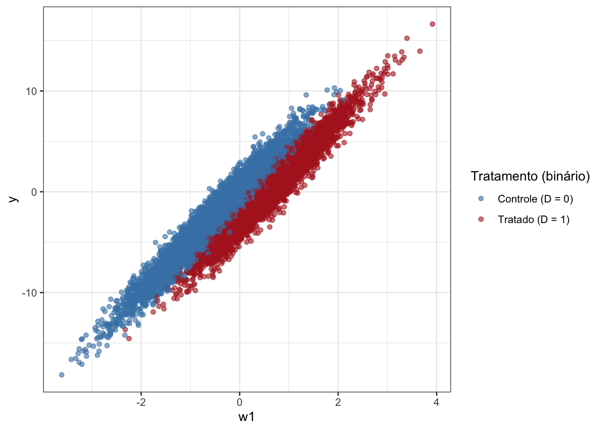
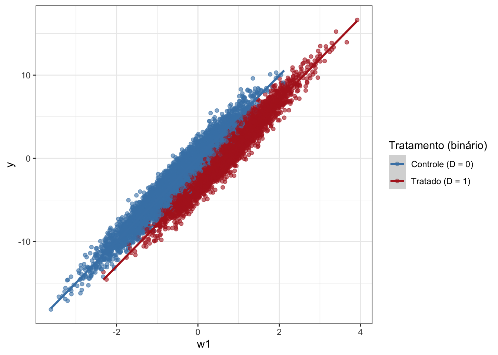
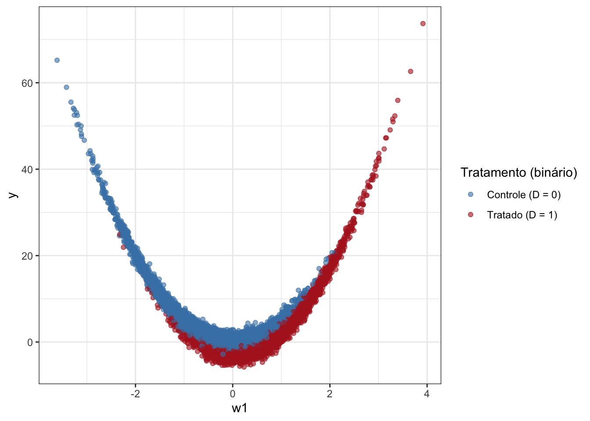
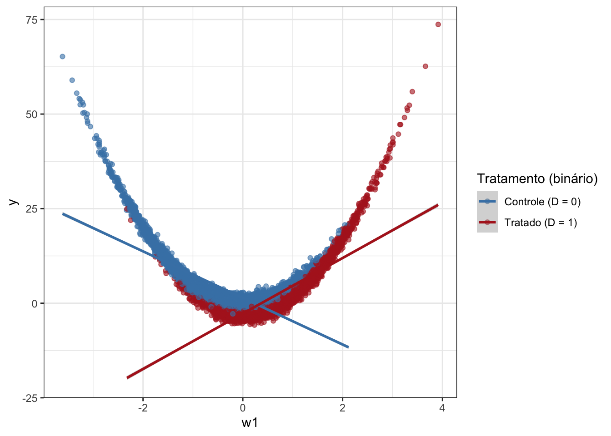
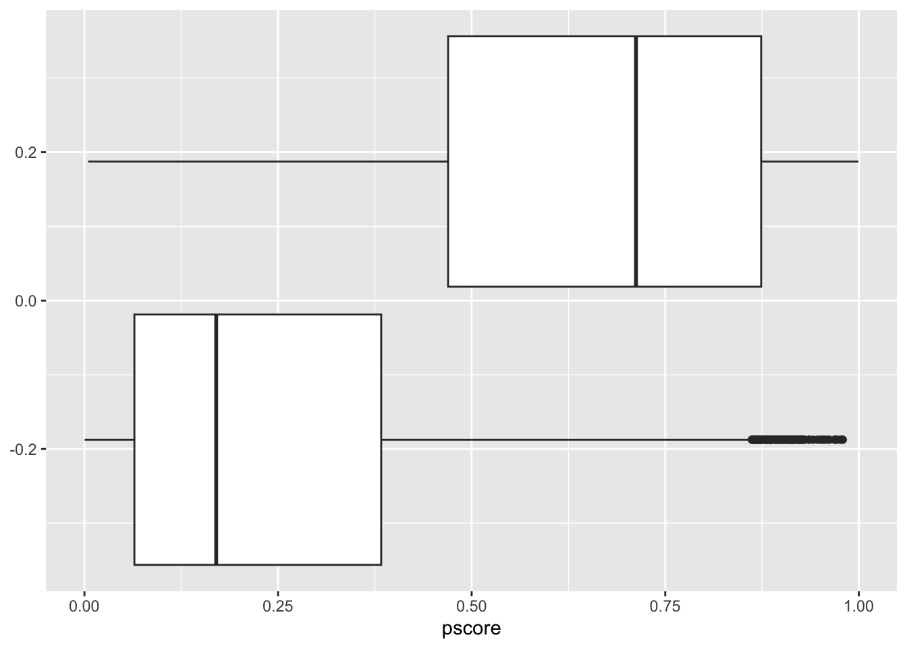
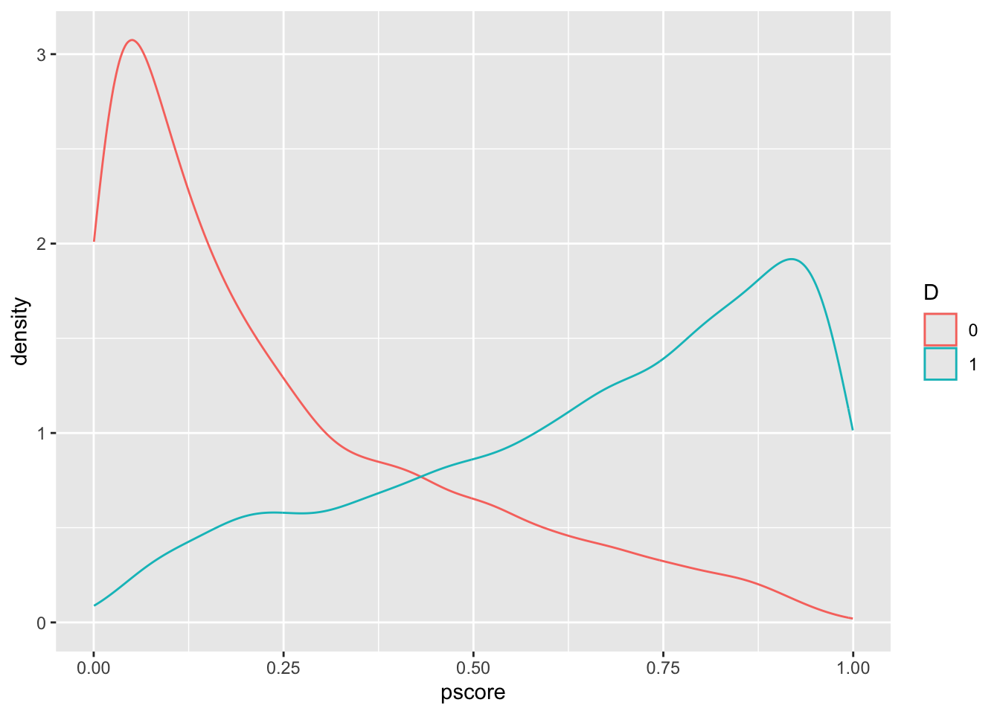

Capítulo 5 Matching
5.1 Introdução
Na aula de hoje, iremos aprender sobre a principal estratégia de “seleção em observáveis”, que é matching. Mas antes, vamos falar de subclassificação ,que é uma técnica mais simples e é útil para introduzir a ideia de matching.
5.2 Propensity Score
O propensity score nada mais é que a probabilidade de uma unidade ser tratada, dada as covariáveis, ou seja, \(Pr(D_i = 1| X_i)\).
A ideia chave para propensity-score vem de um paper de Rosenbaum-Rubin (1983) em que eles mostram que, se a condição 1 de ignorabilidade forte (isto é, \(Y_i(1), Y_i(0) \perp D_i|X_i\)) for satisfeita, então também é verdade que a condição \(Y_i(1), Y_i(0) \perp D_i|\pi(X_i)\) também é satisfeita. E por que isso é importante? Nós nunca sabemos o verdadeiro modelo que relaciona as convariáveis \(X_i\) com \(D_i\) e \(Y_i\), de modo que podemos ter algum problema de modelo mal especificado (por exemplo, supomos um modelo linear, quando na verdade é não-linear). Então, em vez de estimar dezenas de modelos, posso condicionar (“controlar”) apenas pelo propensity score \(\pi(X_i)\). A intuição é que o propensity score cria balanceamento entre tratados e não-tratados.
Para ilustrar o poder desse reusltado, vamos considerar um exemplo simulado, em que ignorability forte é satisfeita, mas um modelo mal-especificado gera amostras não-balanceadas e, portanto, estimativas viesadas.
library(knitr)
library(tidyverse)
library(ggdag)
library(arm)
# true DGP
dag <- dagify(
y ~ D + w1,
D ~ w1
)
ggdag(dag)
O DAG acima ilustra bem qual a relação causal entre variáveis. Para estimar o ATE de \(D\) sobre \(Y\), precisamos fechar o backdoor de \(w_1\). A forma usual como fazemos isso é com regressão. O problema que estamos abordando aqui é quando a amostra é não-balanceada entre tratados e não-tratados, isto é. Vamos visualizar dois tipos de relações (uma linear e outra não-linear) entre a variável de controle \(w_1\) e a resposta \(Y\) para ilustrar o problema do desbalanceamento:
library(ggplot2)
set.seed(202)
n <- 1e4
w1 <- rnorm(n) # único confundidor
tau <- 3 # efeito causal verdadeiro
# GERAMOS UM PROPENSITY SCORE NÃO‐LINEAR
p <- plogis(-0.5 + 2 * w1)
D <- rbinom(n, 1, p)
# GERAÇÃO DOS RESULTADOS POTENCIAIS linear (apenas função de w1, forte ignorabilidade):
y0 <- 5 * w1 + rnorm(n)
y1 <- y0 - tau # efeito constante
y <- ifelse(D == 1, y1, y0)
df <- data.frame(y=y, D=D, w1=w1)
df %>%
mutate(
D = factor(D, levels = c(0,1),
labels = c("Controle (D = 0)", "Tratado (D = 1)"))
) %>%
ggplot(aes(x = w1, y = y, colour = D)) +
geom_point(alpha = 0.6) +
scale_colour_manual(
name = "Tratamento (binário)",
values = c("Controle (D = 0)" = "steelblue",
"Tratado (D = 1)" = "firebrick")
) + theme_bw()
No primeiro gráfico, o efeito causal (ATE) do tratamento é \(-3\) e podemos ver nos dados que de fato em média a resposta é menor entre tratados que no controle. Além disso, vemos também que o efeito é basicamente linear. Mas o pontpo importante aqui é que existem duas regiões dos dados em que praticamente só temos unidades no controle (\(w_1 < -2\)) e ou no tratamento (\(w_1 > -2\)). Isso significa que para que a regressão possa estimar o efeito causal deve extrapolar a estimativa da região em que ambos tratamento e controle estão presentes nos dados para uma região em que não estão presentes. Como o efeito é constante para todas as regiões de \(w_1\), isso não causa problema e a regressão consegue recuperar o ATE sem viés. O gráfico abaixo ilustra o que a regressão está fazendo:
df %>%
mutate(
D = factor(D, levels = c(0,1),
labels = c("Controle (D = 0)", "Tratado (D = 1)"))
) %>%
ggplot(aes(x = w1, y = y, colour = D)) +
geom_point(alpha = 0.6) +
geom_smooth(method = "lm") +
scale_colour_manual(
name = "Tratamento (binário)",
values = c("Controle (D = 0)" = "steelblue",
"Tratado (D = 1)" = "firebrick")
) + theme_bw()
O gráfico mostra duas retas de regressão ajustadas, uma para o controle (em azul) e outra para o tratamento (em vermelho). Efetivamente, temos de estender as duas retas para as regiões em que não há dados, por meio de extrapolação, que no caso significa continuar a linha reta. Assim, temos uma estimativa dos resultados potenciais nessas regiões e podemos computar o efeito causal médio. Como a extrapolação é razoável, não há problema.
Vejamos agora uma situação em que o efeito de \(w_1\) é não linear sobre \(Y\).
set.seed(202)
n <- 1e4
w1 <- rnorm(n) # único confundidor
tau <- 3 # efeito causal verdadeiro
# GERAMOS UM PROPENSITY SCORE NÃO‐LINEAR
p <- plogis(-0.5 + 2 * w1)
D <- rbinom(n, 1, p)
# GERAÇÃO DOS RESULTADOS POTENCIAIS não-linear (apenas função de w1, forte ignorabilidade):
y0 <- 5 * w1^2 + rnorm(n)
y1 <- y0 - tau # efeito constante
y <- ifelse(D == 1, y1, y0)
df <- data.frame(y=y, D=D, w1=w1)
df %>%
mutate(
D = factor(D, levels = c(0,1),
labels = c("Controle (D = 0)", "Tratado (D = 1)"))
) %>%
ggplot(aes(x = w1, y = y, colour = D)) +
geom_point(alpha = 0.6) +
scale_colour_manual(
name = "Tratamento (binário)",
values = c("Controle (D = 0)" = "steelblue",
"Tratado (D = 1)" = "firebrick")
) + theme_bw()
Aqui, vemos que o efeito é não-linear de \(w_1\) sobre \(Y\) e também o desbalanceamento na amostra. Vamos ver o mesmo gráfico com as duas retas ajustadas para entender como a extrapolação pode ficar bem ruim nesse caso.
df %>%
mutate(
D = factor(D, levels = c(0,1),
labels = c("Controle (D = 0)", "Tratado (D = 1)"))
) %>%
ggplot(aes(x = w1, y = y, colour = D)) +
geom_point(alpha = 0.6) +
geom_smooth(method = "lm") +
scale_colour_manual(
name = "Tratamento (binário)",
values = c("Controle (D = 0)" = "steelblue",
"Tratado (D = 1)" = "firebrick")
) + theme_bw()
Um problema óbvio do modelo é que o efeito de w1 é quadrático, então podemos tentar corrigir isso incluindo um termo quadrático.
##
## Call:
## lm(formula = y ~ D + w1 + w1^2, data = df)
##
## Residuals:
## Min 1Q Median 3Q Max
## -8.567 -4.180 -2.347 1.646 73.841
##
## Coefficients:
## Estimate Std. Error t value Pr(>|t|)
## (Intercept) 4.2689 0.1041 40.995 < 2e-16 ***
## D -1.2953 0.1804 -7.181 7.44e-13 ***
## w1 -0.7960 0.0890 -8.943 < 2e-16 ***
## ---
## Signif. codes: 0 '***' 0.001 '**' 0.01 '*' 0.05 '.' 0.1 ' ' 1
##
## Residual standard error: 7.052 on 9997 degrees of freedom
## Multiple R-squared: 0.03237, Adjusted R-squared: 0.03217
## F-statistic: 167.2 on 2 and 9997 DF, p-value: < 2.2e-16O efeito causal é negativo, o que é bom, pois está na direção certa, mas ainda está distante do efeito verdadeiro. Isso ilustra também como a estimativa é dependente do modelo, o que é bem ruim, pois não sabemos qual o modelo certo.
Em resumo, quando há desbalancamento, causamos dependência do modelo, o que é problemático.
Agora, vamos comparar com o propensity score:
library(knitr)
library(tidyverse)
library(ggdag)
# true DGP
reg_aux<- glm(D ~ w1, family = binomial, data=df)
p_score <- reg_aux$fitted.values
reg1 <- lm(y ~ D + p_score)
summary(reg1)##
## Call:
## lm(formula = y ~ D + p_score)
##
## Residuals:
## Min 1Q Median 3Q Max
## -7.921 -4.258 -2.462 1.647 70.708
##
## Coefficients:
## Estimate Std. Error t value Pr(>|t|)
## (Intercept) 4.2799 0.1179 36.307 < 2e-16 ***
## D -2.9562 0.1858 -15.910 < 2e-16 ***
## p_score 1.6681 0.2917 5.718 1.11e-08 ***
## ---
## Signif. codes: 0 '***' 0.001 '**' 0.01 '*' 0.05 '.' 0.1 ' ' 1
##
## Residual standard error: 7.069 on 9997 degrees of freedom
## Multiple R-squared: 0.02781, Adjusted R-squared: 0.02761
## F-statistic: 143 on 2 and 9997 DF, p-value: < 2.2e-16w <- ifelse(D == 1, 1/p_score, 1/(1-p_score)) # pesos IPTW
reg2 <- lm(y ~ D , weights = w)
summary(reg2)##
## Call:
## lm(formula = y ~ D, weights = w)
##
## Weighted Residuals:
## Min 1Q Median 3Q Max
## -15.95 -5.52 -2.87 2.04 324.89
##
## Coefficients:
## Estimate Std. Error t value Pr(>|t|)
## (Intercept) 4.67183 0.09553 48.90 <2e-16 ***
## D -2.57016 0.13452 -19.11 <2e-16 ***
## ---
## Signif. codes: 0 '***' 0.001 '**' 0.01 '*' 0.05 '.' 0.1 ' ' 1
##
## Residual standard error: 9.499 on 9998 degrees of freedom
## Multiple R-squared: 0.03523, Adjusted R-squared: 0.03513
## F-statistic: 365.1 on 1 and 9998 DF, p-value: < 2.2e-16Conseguimos recuperar o ATE sem problemas. E não precisei especificar corretamente a forma funcional da variáveil de controle \(w_1\) no modelo principal, pois usei o propensity score. Note que precisei modelar corretamente a regreessão que calcula o propensity score.
É útil ver como o pscore está distribuído entre os grupos de tratamento e controle:
library(knitr)
library(tidyverse)
library(ggdag)
# true DGP
df <- df %>%
mutate(pscore = p_score)
df %>%
ggplot(aes(pscore, group=D)) + geom_boxplot()

Há desbalanceamento e falta de overlap ou suporte comum, o que leva à extrapolação.
5.3 Matching
A Ideia do matching pode ser ilustrada se notarmos o seguinte. A projeção da reta vermelha para pontos abaixo de \(-2\) é de um \(y\) médio muito baixo, enquanto que o \(y\) médio é muito alto para o controle. O oposto é verificado para a região em que \(w_1 > 2\). Portanto, se eu restringir (excluir os casos) a análise para uma região onde a necessidade de extrapolação é menor, o resultado tende a ser aproximar do ATE
##
## Call:
## lm(formula = y ~ D + w1, data = df)
##
## Residuals:
## Min 1Q Median 3Q Max
## -8.567 -4.180 -2.347 1.646 73.841
##
## Coefficients:
## Estimate Std. Error t value Pr(>|t|)
## (Intercept) 4.2689 0.1041 40.995 < 2e-16 ***
## D -1.2953 0.1804 -7.181 7.44e-13 ***
## w1 -0.7960 0.0890 -8.943 < 2e-16 ***
## ---
## Signif. codes: 0 '***' 0.001 '**' 0.01 '*' 0.05 '.' 0.1 ' ' 1
##
## Residual standard error: 7.052 on 9997 degrees of freedom
## Multiple R-squared: 0.03237, Adjusted R-squared: 0.03217
## F-statistic: 167.2 on 2 and 9997 DF, p-value: < 2.2e-16##
## Call:
## lm(formula = y ~ D + w1, data = subset(df, w1 > -2 & w1 < 2))
##
## Residuals:
## Min 1Q Median 3Q Max
## -7.172 -3.197 -1.537 1.892 17.784
##
## Coefficients:
## Estimate Std. Error t value Pr(>|t|)
## (Intercept) 3.46278 0.06855 50.517 < 2e-16 ***
## D -1.98658 0.11897 -16.698 < 2e-16 ***
## w1 -0.35344 0.06647 -5.317 1.08e-07 ***
## ---
## Signif. codes: 0 '***' 0.001 '**' 0.01 '*' 0.05 '.' 0.1 ' ' 1
##
## Residual standard error: 4.582 on 9554 degrees of freedom
## Multiple R-squared: 0.0636, Adjusted R-squared: 0.0634
## F-statistic: 324.5 on 2 and 9554 DF, p-value: < 2.2e-16##
## Call:
## lm(formula = y ~ D + w1, data = subset(df, w1 > -1.5 & w1 < 1.5))
##
## Residuals:
## Min 1Q Median 3Q Max
## -5.8241 -2.2643 -0.8373 1.6466 10.7901
##
## Coefficients:
## Estimate Std. Error t value Pr(>|t|)
## (Intercept) 2.57120 0.04674 55.016 < 2e-16 ***
## D -2.47756 0.08049 -30.782 < 2e-16 ***
## w1 -0.20525 0.05296 -3.875 0.000107 ***
## ---
## Signif. codes: 0 '***' 0.001 '**' 0.01 '*' 0.05 '.' 0.1 ' ' 1
##
## Residual standard error: 3.058 on 8674 degrees of freedom
## Multiple R-squared: 0.1553, Adjusted R-squared: 0.1551
## F-statistic: 797.4 on 2 and 8674 DF, p-value: < 2.2e-16##
## Call:
## lm(formula = y ~ D + w1, data = subset(df, w1 > -1 & w1 < 1))
##
## Residuals:
## Min 1Q Median 3Q Max
## -4.3868 -1.2707 -0.2359 1.1639 6.2007
##
## Coefficients:
## Estimate Std. Error t value Pr(>|t|)
## (Intercept) 1.41474 0.02854 49.572 < 2e-16 ***
## D -2.76694 0.04831 -57.274 < 2e-16 ***
## w1 -0.16879 0.04300 -3.925 8.74e-05 ***
## ---
## Signif. codes: 0 '***' 0.001 '**' 0.01 '*' 0.05 '.' 0.1 ' ' 1
##
## Residual standard error: 1.728 on 6855 degrees of freedom
## Multiple R-squared: 0.3968, Adjusted R-squared: 0.3966
## F-statistic: 2254 on 2 and 6855 DF, p-value: < 2.2e-16##
## Call:
## lm(formula = y ~ D + w1, data = subset(df, w1 > -1 & w1 < 1))
##
## Residuals:
## Min 1Q Median 3Q Max
## -4.3868 -1.2707 -0.2359 1.1639 6.2007
##
## Coefficients:
## Estimate Std. Error t value Pr(>|t|)
## (Intercept) 1.41474 0.02854 49.572 < 2e-16 ***
## D -2.76694 0.04831 -57.274 < 2e-16 ***
## w1 -0.16879 0.04300 -3.925 8.74e-05 ***
## ---
## Signif. codes: 0 '***' 0.001 '**' 0.01 '*' 0.05 '.' 0.1 ' ' 1
##
## Residual standard error: 1.728 on 6855 degrees of freedom
## Multiple R-squared: 0.3968, Adjusted R-squared: 0.3966
## F-statistic: 2254 on 2 and 6855 DF, p-value: < 2.2e-16A ideia do matching é um pouco diferente do que fizemos acima, pois estamos excluindo as observações que estão no tratamento e que não possuem controle correspondente, e do controle que não possuem tratamento correspondente. Não há erro em excluir os dois tipos de observações, mas sempre temos de nos perguntar qual é o estimando de interesse. Se faço esse procedimento, o meu estimando não é nenhum dos usuais ATT ou ATE.
No matchingf, nós nos concentramos em estimar o ATT, de forma que procuramos achar observações no controle que são próximas das tratadas, ou seja, excluímos os controles que não são um match para as observações tratadas.
5.4 Suposições de identificação
Supondo para simplificar um tratamento binário \(T\), e uma covariável categórica \(X\), temos:
\((Y^1, Y^0) \indep T|X \text{ (Independência Condicional)}\)
\(0 < P(T=1|A) < 1 \text{ (Suporte comum)}\)
Temos então a seguinte derivação (usando o fato de os resultados potenciais são independentes do treatment assignment, condicional à covariável) e a switching equation no último passo:
\[\begin{align} \mathbb{E}[Y^1-Y^0|X] & = \mathbb{E}[Y^1 - Y^0 | X, T=1] \\ & = \mathbb{E}[Y^1| X, T=1] - \mathbb{E}[Y^0| X,T=0] \\ & = \mathbb{E}[Y| X, D=1] - \mathbb{E}[Y| X, D=0] \end{align}\]
E o estimador que usamos pode ser representado (supondo suporte comum) como:
\(\widehat{\delta_{ATE}} = \sum_{x\in X}{(\mathbb{E}[Y| X=x, D=1] - \mathbb{E}[Y| X=x, D=0])P(X=x)}\)
E o que estamos fazendo é computar a média do efeito do tratamento condicional ponderado pela distribuição de \(X\).
Para identificar o ATE, nós precisamos supor independência condicional a ambos os resultados potenciais. Se porém isso for crível apenas para \(Y^0\), podemos estimar o ATT. Basta lembrarmos que \(\mathbb{E}[Y_i|T_i=1] - \mathbb{E}[Y_i|T_i=0] = \mathbb{E}[Y_i^1 - Y_i^0|T_i=1] + \mathbb{E}[Y_i^0|T_i=1] - \mathbb{E}[Y_i^0|T_i=0]\)
5.5 Matching
A técnica de matching trata os resultados potenciais como missing data. Assim, pudermos supor CIA com credibilidade, pelo menos com relação a \(Y^0\), então podemos imputar esses resultados potenciais e estimar o ATT. A ideia é achar uma unidade a mais similar possível a unidade tratada para servir como contrafactual. Assim, poderíamos computar “diretamente” o ATT, já que teríamos os \(Y^1\) e \(Y^0\) para cada unidade, este último imputado.
Há dois grandes grupos de métodos de matching: exato e aproximado.
5.6 Matching exato
Nesse método, nós achamos uma unidade (ou mais) que tenham um valor exatamente igual nas covariáveis (ou no propensity score), e imputamos o controle.
5.7 Matching aproximado
Para aproximar o matching, utilizamos alguma noção de distância entre variáveis. Para mais de uma variável, podemos utilizar algumas métricas de distância. A primeira é a distância euclidiana (supondo \(K\) variáveis).
\[ \lVert X_i - X_j \rVert = \sqrt{(X_i - X_j)'(X_i - X_j)} \] \[ \lVert X_i - X_j \rVert = \sqrt{\sum_{n=1}^k(X_{ni} - X_{nj})} \] A distância euclidiana utiliza a escala das próprias variáveis, então é comum usar a distância euclidiana normalizada:
\[ \lVert X_i - X_j \rVert = \sqrt{\sum_{n=1}^k(\frac{X_{ni} - X_{nj})}{\hat{\sigma}_n^2}} \] Outra métrica muito usada é a distância de Mahalanobis, que basicamente divide pela covariância (amostral) entre as variáveis em vez da variância.
5.8 Viés
Uma vez que fizemos o matching entre unidades, qual nosso estimador? Lemrbando que o estimando é o ATT. \[ \widehat{\delta}_{ATT} = \dfrac{1}{N_T} \sum_{D_i=1} (Y_i - Y_{j(i)}) \]
library(MatchIt)
result_0 <- matchit(D ~ w1, data = df, method = NULL, distance = 'glm')
summary(result_0)##
## Call:
## matchit(formula = D ~ w1, data = df, method = NULL, distance = "glm")
##
## Summary of Balance for All Data:
## Means Treated Means Control Std. Mean Diff. Var. Ratio eCDF Mean
## distance 0.6549 0.2493 1.5714 1.2566 0.3685
## w1 0.7004 -0.5362 1.6030 0.9132 0.3685
## eCDF Max
## distance 0.5761
## w1 0.5761
##
## Sample Sizes:
## Control Treated
## All 5806 4194
## Matched 5806 4194
## Unmatched 0 0
## Discarded 0 0Cochran, W. G. 1968. “The Effectiveness of Adjustment by Subclassification in Removing Bias in Observational Studies.” Biometrics 24 (2): 295–313.
5.9 Declare Design e Matching
Pode ser útil usar o declare design para investigar o uso de matching. Vamos fazer isso para o dataset lalonde.
Esse é um banco de dados famoso na economia, pois o pesquisador Lalonde (1986) foi investigar se aplicação de métodos (então) tradicionais de modelagem econométrica eram capaz de recuperar o efeito causal de um estudo experimental chamada National Supported Work Demonstration (NSW), um programa de emprego temporário para dar experiência de trabalho. Ele coletou dados de um survey “representativo” de trabalhadores americanos (PSID) e elencou esses trabalhadores como grupo controle e empregou métodos econométricos para tentat estimar o efeito causal. Os resultados foram desastrosos, no sentido de altamente variáveis dependendo do modelo e subconjunto de dados e longe da estimativa experimental (incluindo com sinal errado).
Vamos replicar esse trabalho, usando matching e pscore. A variável resposta do banco de dados é re78 (real earnings in 1978). O tratamento é a variável treat. As demais variáveis são covariáveis.
## [1] "/Users/manoelgaldino/Documents/DCP/Cursos/Causalidade/Causalidade"lalonde <- fread(here("Dados", "lalonde_nsw.csv"))
dt <- lalonde[, .(re78, treat)] %>%
rename(Y = re78, D = treat)
dt %>%
group_by(D) %>%
sample_n(3) %>%
kableExtra::kable(digits = 0, col.names = c("Income", "Treatment"))| Income | Treatment |
|---|---|
| 0 | 0 |
| 290 | 0 |
| 7010 | 0 |
| 13830 | 1 |
| 0 | 1 |
| 60308 | 1 |
dt %>%
group_by(D) %>%
summarize(mean(Y)) %>%
kableExtra::kable(digits = 0, col.names = c("Treatment", "Income"))| Treatment | Income |
|---|---|
| 0 | 4555 |
| 1 | 6349 |
The simple difference in means is 1794.
5.9.1 Matching e Propensity scores
Using age, education, hispanic, black, married, nodegree, RE74 and RE75, construct a propensity score using the treated group in lalonde_nsw.csv and the control sample of lalonde_psid.csv. Use a logit regression model to do so (you may use a canned routine to run the regression). Report the average p-score for the treated and control samples, and plot the propensity score densities for the treatment and control groups.
nsw_data <- lalonde
psid_data <- fread(here("Dados", "lalonde_psid.csv"))
nsw_treat <- nsw_data[nsw_data$treat == 1, ]
psid_control <- psid_data[psid_data$treat == 0, ]
dw_data <- rbind(nsw_treat, psid_control)library(MatchIt)
library(DeclareDesign)
exact_matching <-
function(data) {
matched <- matchit(D ~ X, method = "exact", data = data)
match.data(matched)
}
declaration_16.2 <-
declare_model(
N = 100,
U = rnorm(N),
X = rbinom(N, 1, prob = 0.5),
D = rbinom(N, 1, prob = 0.25 + 0.5 * X),
Y_D_0 = 0.2 * X + U,
Y_D_1 = Y_D_0 + 0.5
) +
declare_inquiry(ATT = mean(Y_D_1[D == 1] - Y_D_0[D == 1])) +
declare_step(handler = exact_matching) +
declare_measurement(Y = reveal_outcomes(Y ~ D)) +
declare_estimator(Y ~ D,
weights = weights,
.method = difference_in_means,
inquiry = "ATT",
label = "Matched difference-in-means") +
declare_estimator(Y ~ D,
.method = difference_in_means,
inquiry = "ATT",
label = "Raw difference-in-means")library(MatchIt)
m.out0 <- matchit(treat ~ age + education + hispanic + black + married + nodegree + re74 + re75,
data = dw_data,
method = NULL,
distance = "glm")## Warning: glm.fit: fitted probabilities numerically 0 or 1 occurred##
## Call:
## matchit(formula = treat ~ age + education + hispanic + black +
## married + nodegree + re74 + re75, data = dw_data, method = NULL,
## distance = "glm")
##
## Summary of Balance for All Data:
## Means Treated Means Control Std. Mean Diff. Var. Ratio eCDF Mean
## distance 0.6364 0.0270 2.1674 8.0268 0.4816
## age 25.8162 34.8506 -1.2627 0.4696 0.2317
## education 10.3459 12.1169 -0.8808 0.4255 0.1091
## hispanic 0.0595 0.0325 0.1139 . 0.0269
## black 0.8432 0.2506 1.6301 . 0.5926
## married 0.1892 0.8663 -1.7287 . 0.6771
## nodegree 0.7081 0.3052 0.8862 . 0.4029
## re74 2095.5737 19428.7458 -3.5471 0.1329 0.4684
## re75 1532.0553 19063.3377 -5.4458 0.0561 0.4695
## eCDF Max
## distance 0.8817
## age 0.3771
## education 0.4029
## hispanic 0.0269
## black 0.5926
## married 0.6771
## nodegree 0.4029
## re74 0.7292
## re75 0.7736
##
## Sample Sizes:
## Control Treated
## All 2490 185
## Matched 2490 185
## Unmatched 0 0
## Discarded 0 0library(MatchIt)
m.out1 <- matchit(treat ~ age + education + hispanic + black + married + nodegree + re74 + re75,
data = dw_data,
method = "nearest",
distance = "glm")## Warning: glm.fit: fitted probabilities numerically 0 or 1 occurred# Full matching on a probit PS
m.out2 <- matchit(treat ~ age + education + black + married +
nodegree + re74 + re75,
data = lalonde,
method = "full",
distance = "glm",
link = "probit")
m.data <- match_data(m.out2)
library("marginaleffects")
fit <- lm(re78 ~ treat * (age + education + black + married +
nodegree + re74 + re75),
data = m.data,
weights = weights)
avg_comparisons(fit,
variables = "treat",
vcov = ~subclass,
newdata = subset(treat == 1))##
## Estimate Std. Error z Pr(>|z|) S 2.5 % 97.5 %
## 2064 679 3.04 0.00238 8.7 733 3396
##
## Term: treat
## Type: response
## Comparison: 1 - 05.9.2 Discovering a DGP
library(synthpop)
# vars <- c("treat","age","education","hispanic","black","married", "nodegree", "re74", "re75", "re78")
# s2 <- syn(dw_data, method = "parametric", seed = 123)
#
# # Generate synthetic data with customized methods
# syn_result <- syn(original_data, method = synth_methods)
# synthetic_data <- syn_result$synfull_matching <-
function(data) {
matched <- matchit(treat ~ age + education + hispanic + black + married + nodegree + re74 + re75, method = "full", data = data)
match.data(matched)
}
declaration_16.2 <-
declare_model(
N = 1000,
U = rnorm(N),
X = rbinom(N, 1, prob = 0.5),
D = rbinom(N, 1, prob = 0.25 + 0.5 * X),
Y_D_0 = 0.2 * X + U,
Y_D_1 = Y_D_0 + 0.5
) +
declare_inquiry(ATT = mean(Y_D_1[D == 1] - Y_D_0[D == 1])) +
declare_step(handler = exact_matching) +
declare_measurement(Y = reveal_outcomes(Y ~ D)) +
declare_estimator(Y ~ D,
weights = weights,
.method = difference_in_means,
inquiry = "ATT",
label = "Matched difference-in-means") +
declare_estimator(Y ~ D,
.method = difference_in_means,
inquiry = "ATT",
label = "Raw difference-in-means")# logit_model <- feglm(treat ~ age + education + hispanic + black + married + nodegree + re74 + re75, data = dw_data, family = "binomial")
# pscore_logit <- predict(logit_model, dw_data)
#
# dw_data %>%
# bind_cols(tibble(pscore_logit = pscore_logit)) %>%
# group_by(treat) %>%
# summarize(pscore_logit = mean(pscore_logit))